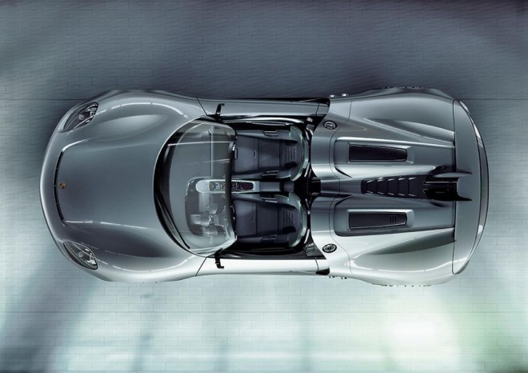
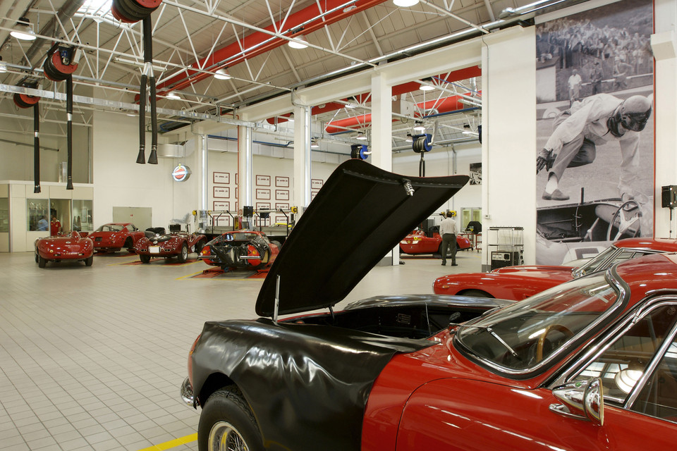
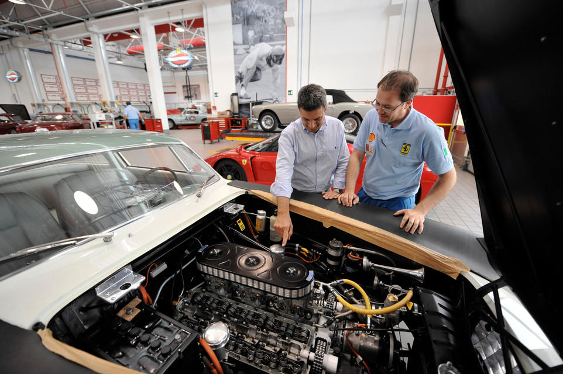
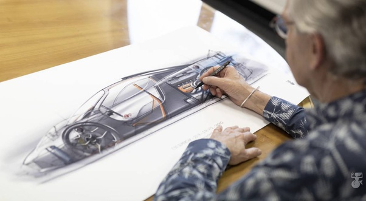

The Technology that Powers the Greatest Cars in the World
Technology is a moving target. Today's high-tech automotive flagship can seemingly be easily be supplanted by another car with more innovations or a more refined, better-performing version of existing technologies.
How a top performance cars set Big Design Challenges
The need to deliver downforce and aerodynamic efficiency at a level never before achieved by Ferrari - or any competitor - presented huge challenges. It also posed a significant task for the designers to make the car look beautiful – a 'must' for any Ferrari. As always, this Ferrari is a mix of science and artistry.
The front end and rear end are quite different from previous Ferraris. They owe more to limited-edition supercars and motorsport than to production sports cars. Distinctive touches include the twin-section front bumper which acts like a wing and scoops air into diffusers ahead of the front wheels, generating downforce over the front axle. The vast front intakes cool both the V8 engine and the electric motors (cooled by the central front intake). The tail features large twin diffusers - similar to a GT racer's - that help generate downforce, and there’s an innovative active-aero twin-section spoiler to boost top speed and also to increase downforce in corners or under braking.
Beyoned Technology
Recovering kinetic energy to boost power (KERS) first surfaced in F1 in 2008. This type of hybrid drive has been universal in Grand Prix racing since 2014. One of the road-going pioneers of KERS was the legendary LaFerrari, which had a 150 cv electric motor to add performance to its 800 cv V12. The new SF90 Stradale uses hybrid technology to increase power and performance: it has a combined 1000 cv, making it the most powerful road Ferrari ever. Significantly, this is approximately the maximum power of Ferrari's current F1 car, the SF90. The SF90 Stradale is also Ferrari’s first plug-in hybrid. Its extra battery power means it can drive silently in emissions-free electric mode.
More Power, No more Weight
Turbocharging significantly boosts performance and was first used by Ferrari in F1 in 1981. The 126 F1 car would win the World Constructors' Championship for Ferrari in 1982 and 1983. On the road, the legendary GTO of 1984 used a twin turbocharged V8 and was fêted for its performance. The turbocharged engine that’s part of the powertrain of the new SF90 Stradale is the most powerful V8 in Ferrari history, producing 780 cv. Turbocharging typically makes for a faster and more thrilling car, as well as offering more accessible performance.